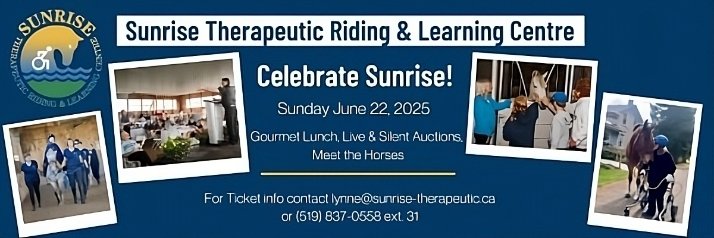
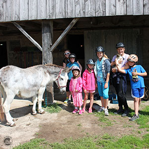

Notable Upcoming Events and Camps
Celebrate Sunrise!
Farm Discovery Camp (Ages 5-8)
Farm Discovery Camp is a farm themed camp for children 5-8 years of age. Our camp provides one week session options with the opportunity to have hands-on horse experience:
- Grooming & Leading Miniature Horses
- Low Ropes Challenge Course
- Swimming
- Accessible Playground
- Frog Pond
- Arts & Crafts
- Nature Programs
- Outdoor Games